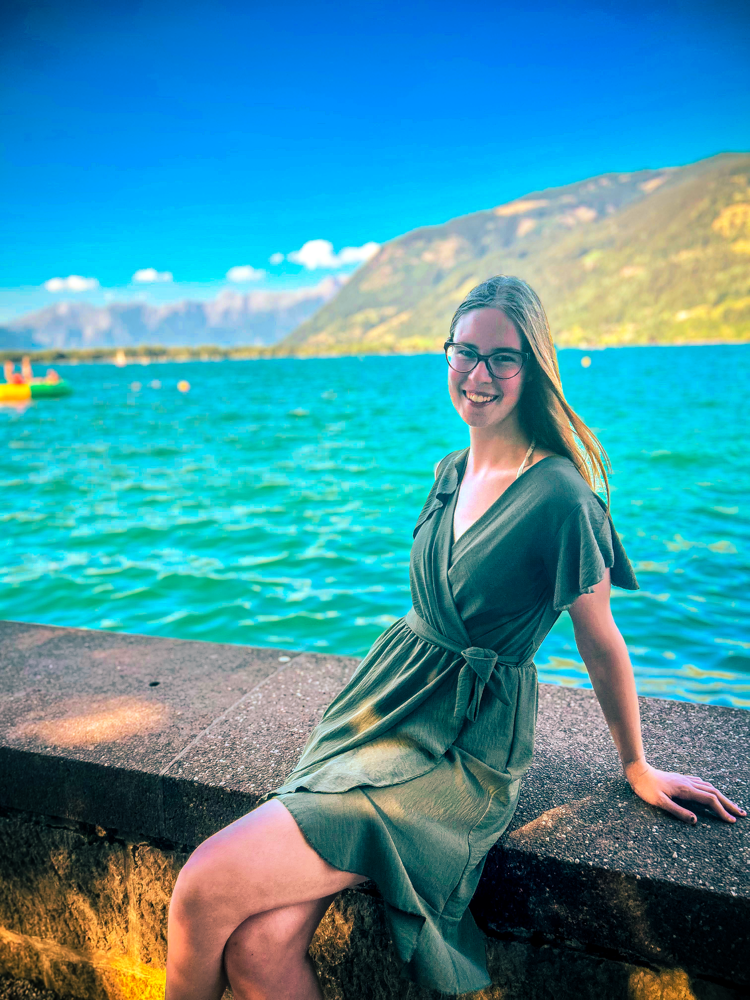

Tessa Wolvekamp • CMD Student, Avans University
Hey there, I’m Tessa.
I’m an 18-year-old designer in my second year studying Communication & Multimedia Design (CMD) at Avans University of Applied Sciences in the Netherlands.
My design direction is grounded in immersive storytelling. I believe that thoughtful design should do more than look pretty on a screen — it should invite people into an experience that makes them think, feel, or discover something unexpected beneath the surface.
More than meets the eye.
What Kind of Designer I Am Becoming
I want to become a versatile designer who turns static concepts into living narratives. Whether crafting a tactile beverage identity like Tessora that triggers taste anticipation, choreographing 8-frame pixel animations in Lucky Bird to foster empathy for urban wildlife, or designing biophilic public trellises in Geforceerd Groen to relieve urban heat stress, my work always honors my personal motto: “More than meets the eye.”
Skills & Creative Toolset
The core competencies and software tools I actively use across design disciplines.
Brand & Packaging
Visual identity systems, logo design, label typography, 3D bottle and can mock-up presentation, print-ready file preparation.
Game Design & Pixel Art
Character roster conceptualization, pixel art sprite sheets, walk & flight cycles, frame timing, obstacle design.
Spatial & Civic Design
Urban heat island research, public space interventions, biophilic architecture concepts, photorealistic montages.
Software & Tech
Adobe Illustrator, Adobe Photoshop, InDesign, Aseprite, Figma, HTML5, modern responsive CSS3, and JavaScript basics.
Academic Journey
-
2025 — Present (Year 2)
BSc Communication & Multimedia Design (CMD)
Avans University of Applied Sciences, NetherlandsFocusing on multi-disciplinary design studios, visual branding, interaction design, creative technologies, and user research.
-
2026 — 2027 Goals
Internship & Minor Specialization
Creative Studio / Digital AgencyPreparing for a third-year design internship in visual identity, digital interaction, or multimedia storytelling.